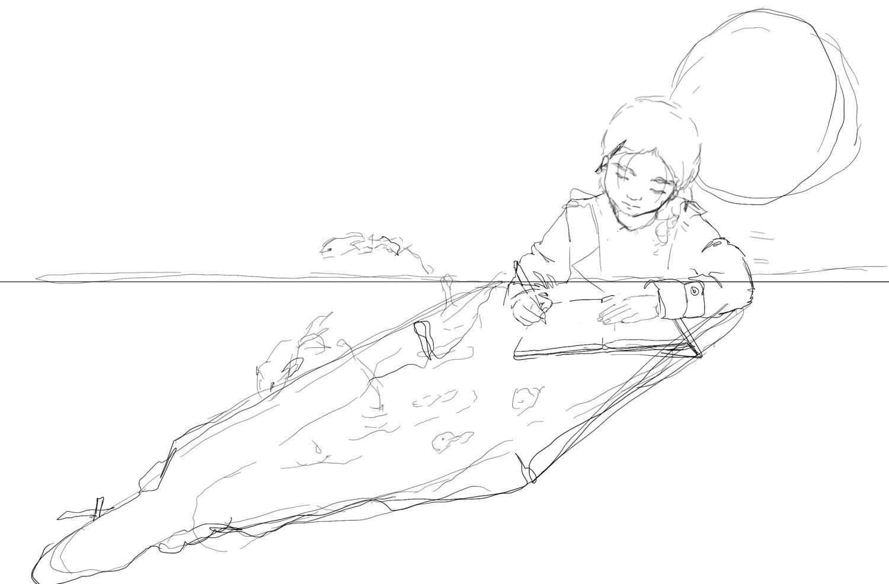
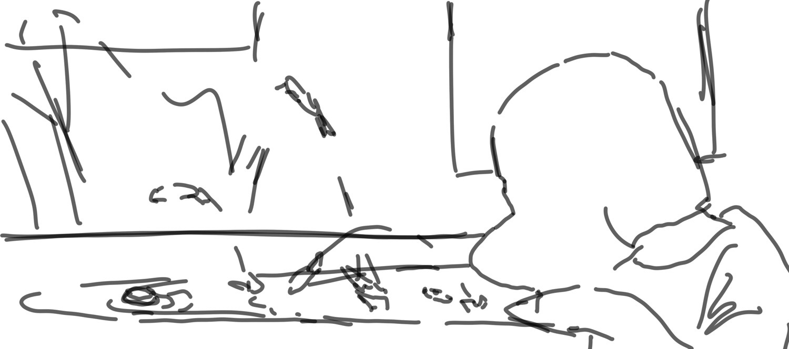

Unlike most my other drawings, these had a prompt: "Black". It's a very general prompt, one that can take on all sorts of meanings, but the first idea that crossed my mind was the concept of a blackbody.
A blackbody is a substance that absorbs all EM radiation (light) that falls on it. Therefore we can't see any radiation with the wavelengths of the other colors. Where did they go? What are they doing? What swims in the black color of a blackbody?
This was my first attempt at the prompt:
I wanted to draw creatures and objects floating in a black pool of water, with only the floating parts visible to us. A black background made the mood too dark, however, and the overall composition and image just didn't feel right.
Scrapping that idea, I had to come up with a new one.
A while ago I tried to draw a bunch of fish jumping out from the shadow of a thinking girl. The shadow shapes were too formless to identify them as shadows, so I left the idea on hold.
 A cat's shadow, however, is very distinct:
(The creatures swimming were inspired by chinese statues of guardian lions.)
Later I showed the drawing to Mama (my most honest -- and therefore harshest -- critic). She pointed out that the shadow looked more like a body, with the shadow ears as legs, and the perspective made it difficult to identify the shadow surface as a table.
Reworking the image again, I tried various angles for the cat, wondering which one would produce a shadow that matched the perspective of the creatures I drew. In the end the best idea was to draw the whole body of the cat, from far away, so the shadow was unmistakable:
The biggest take-away from this drawing, I think, is that sometimes it's best to show someone your ideas before moving forward. In the second version, I was too wrapped up in the concept of the illustration to realize that my composition might confuse the viewers.
We all have blind spots. Thankfully we also have other people who can cover for us.